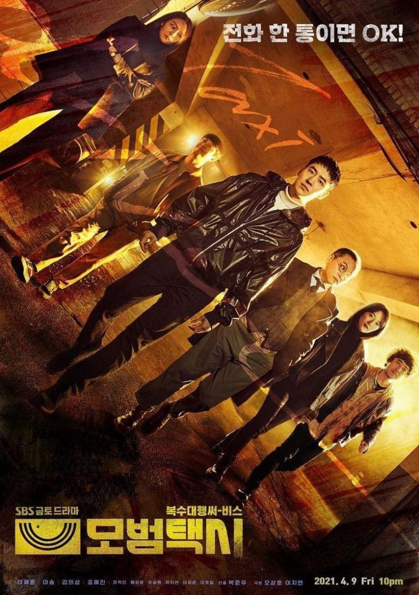

Taxi Driver
Taxi driver adalah seri televisi Korea Selatan tahun 2021 yang menampilkan Lee Je-hoon, Esom, Kim Eui-sung, dan Pyo Ye-jin. Diadaptasi dari webtoon The Deluxe Taxi karya Carlos dan Lee Jae-jin, drama ini ditayangkan perdana di SBS TV Dan NET. setiap Jumat dan Sabtu pukul 22:00 (WSK) mulai 9 April hingga 29 Mei 2021.[2] Seri ini juga tersedia untuk penstriman di Viu di wilayah tertentu. Kim Do-gi (Lee Je-hoon) adalah lulusan Korea Naval Academy yang ibunya dibunuh ketika dia masih muda. Dia sekarang bekerja sebagai sopir taksi untuk sebuah perusahaan yang menawarkan layanan "panggilan balas dendam" kepada kliennya.